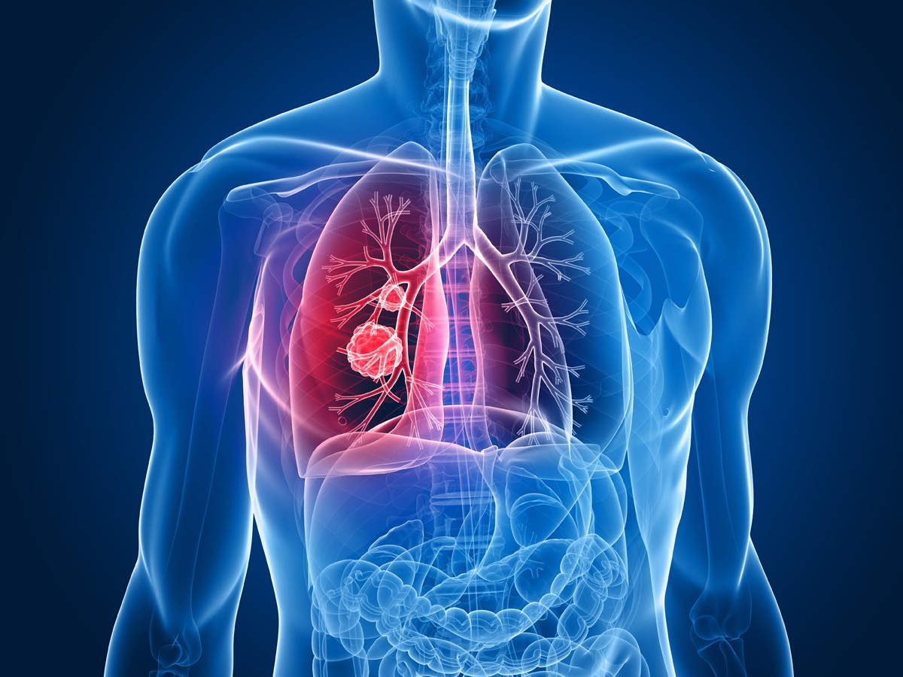
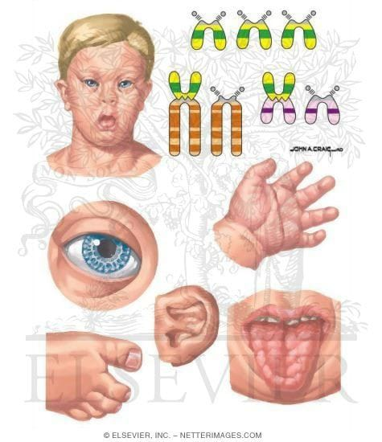
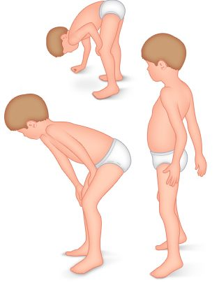
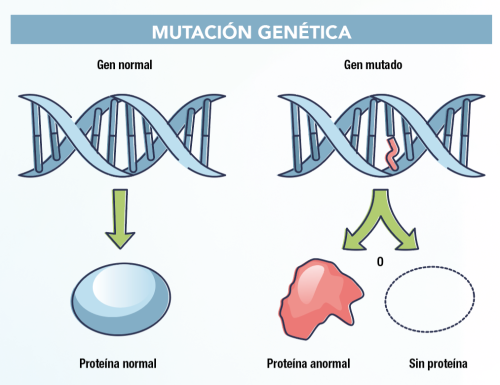

Las enfermedades genéticas son trastornos que se desarrollan debido a mutaciones, heredadas o no, en nuestro genoma. Existen más de 6.000 distintas. Algunas de las enfermedades genéticas más comunes incluyen la fibrosis quística, el síndrome de Down y la distrofia muscular de Duchenne.
La fibrosis quística es una enfermedad genética y hereditaria que afecta a la fisiología de los pulmones, alterando también la funcionalidad del aparato digestivo y de otros órganos. Debido a una alteración genética, las mucosas de la persona son más espesas y pegajosas de lo normal, cosa que hace que, en lugar de cumplir con su función de lubricación, se acumulen en los pulmones y otras zonas del cuerpo.
El síndrome de Down es una enfermedad genética que se produce cuando hay una copia extra del cromosoma 21. Las personas con síndrome de Down tienen características físicas distintivas y pueden tener discapacidades intelectuales y problemas de salud.
La distrofia muscular de Duchenne es una enfermedad genética que afecta a los músculos. Es causada por una mutación en el gen DMD y afecta principalmente a los niños. Los síntomas incluyen debilidad muscular progresiva y dificultad para caminar.
Las enfermedades genéticas pueden ser causadas por mutaciones en un solo gen (trastornos monogénicos), por mutaciones en múltiples genes (trastornos poligénicos) o por cambios en el número o la estructura de los cromosomas (trastornos cromosómicos).
Los síntomas de las enfermedades genéticas pueden variar ampliamente, desde leves hasta graves. Algunas enfermedades genéticas pueden ser tratadas con medicamentos o terapias, mientras que otras no tienen cura.
El diagnóstico de una enfermedad genética puede implicar pruebas genéticas para detectar mutaciones en el ADN. El asesoramiento genético también puede ser útil para las personas que tienen antecedentes familiares de enfermedades genéticas.